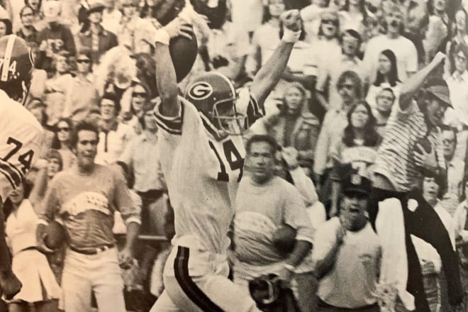

"Dr. Charles Herty was the first UGA football coach and he led the Bulldogs to a 1-1 record in 1892. In their first game, Georgia defeated Mercer 50-0 in Athens. Georgia met Auburn at Piedmont Park in Atlanta for their second and final game of 1892. Auburn defeated Georgia 10-0 and the “The Deep South’s Oldest Rivalry” was started. Vince Dooley, Georgia’s winningest coach, led the Bulldogs to the 1980 National Championship and 6 SEC Championships. Dooley coached the Dawgs from 1964 to 1988 and his overall record was 201-77-10.  In 2001, Mark Richt took over the head coaching position at the University of Georgia and returned the Bulldogs to national prominence. In his 15 seasons as Head Coach, Mark Richt led the Dawgs to a 145-51 record (83-37 SEC), the 2002 and 2005 SEC Championships and nine bowl wins. On Sunday, Nov. 29, 2015, Mark Richt was fired as the head coach of the Georgia Bulldogs. The Bulldogs went 9-3 in 2015, but lost big to Alabama and Florida and a close game at Tennessee after leading by 21. Alabama defensive coordinator and UGA alum Kirby Smart was named the new head football coach on Dec. 6, 2015. In his second season in Athens, Kirby Smart and the Bulldogs won the 2017 SEC Championship Game 28-7 over Auburn and won the College Football Semifinal at the Rose Bowl 54-48 in double-overtime over Oklahoma. Georgia advanced to the College Football National Championship, but fell to Alabama 26-23 in overtime."